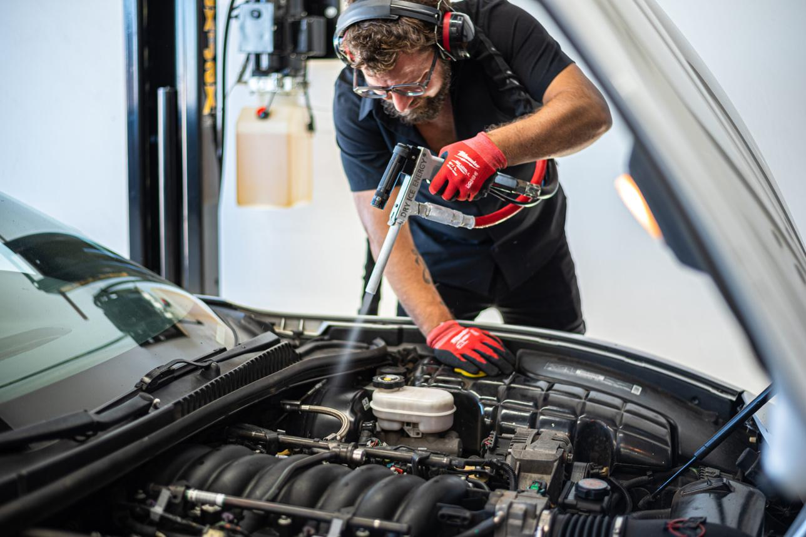
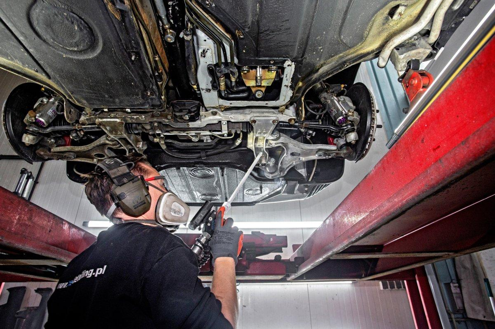

Tóm tắt nhanh
Đá khô sợi vệ sinh ô tô là gì?
Đá khô sợi là CO₂ rắn được tạo thành dạng sợi hoặc pellet nhỏ, thường dùng cho máy phun đá khô. Khi được gia tốc bằng khí nén, các hạt đá khô va chạm vào bề mặt bẩn, làm lớp dầu mỡ, bụi đường, nhựa đường hoặc cặn bám co lại và bong ra. Ngay sau đó đá khô thăng hoa thành khí CO₂, không tạo nước thải và không để lại vật liệu phun trên xe.
Trong chăm sóc xe chuyên sâu, phương pháp này được gọi là dry ice blasting. Điểm mạnh của nó nằm ở khả năng làm sạch các vị trí nhiều khe hẹp mà vẫn hạn chế tháo lắp: khoang máy, giắc điện, ron cao su, hốc bánh, gầm xe và các cụm chi tiết khó tiếp cận bằng khăn hoặc bàn chải.
Vì sao garage ô tô dùng đá khô sợi?
- Làm sạch khô: đá khô thăng hoa trực tiếp nên không làm ướt khoang máy như rửa nước áp lực cao.
- Không dùng hóa chất tẩy mạnh: phù hợp với garage muốn giảm mùi dung môi, giảm nước thải và hạn chế ảnh hưởng đến cao su, nhựa nếu vận hành đúng.
- Ít tháo lắp: hạt phun len vào khe nhỏ, giúp làm sạch bản lề, gân máy, khe ghế, gầm và mâm phanh nhanh hơn vệ sinh thủ công.
- Không để lại hạt mài: khác với phun cát hoặc bi, đá khô không tạo cặn thứ cấp; kỹ thuật viên chỉ cần thu gom lớp bẩn đã bong ra.
- Phù hợp xe cao cấp, xe cổ: khi cần giữ chi tiết nguyên bản và hạn chế nước, đá khô sợi là lựa chọn đáng cân nhắc.
Hạng mục ô tô phù hợp với đá khô sợi
1. Vệ sinh khoang máy
Khoang máy có nhiều dây điện, cảm biến, khe nhôm đúc và khu vực bám dầu. Đá khô sợi giúp bóc lớp bụi dầu mà không đọng nước quanh giắc điện. Kỹ thuật viên vẫn cần che các điểm nhạy cảm, giảm áp trên nhựa giòn và không phun quá lâu vào một vị trí.
2. Gầm xe và hốc bánh
Gầm xe thường bám bùn khô, dầu mỡ, nhựa đường và bụi phanh. Phun đá khô giúp nhìn rõ tình trạng cao su, rotuyn, phuộc, ống dầu và các điểm rò rỉ sau khi lớp bẩn được loại bỏ. Đây là hạng mục hữu ích trước khi bảo dưỡng, phục hồi gầm hoặc kiểm tra xe cũ.
3. Mâm phanh, cùm phanh và chi tiết treo
Bụi phanh kết hợp dầu mỡ tạo lớp bám rất khó sạch. Đá khô sợi hỗ trợ làm sạch sâu quanh cùm phanh, mâm, càng A và lò xo giảm xóc mà không cần dùng nhiều hóa chất. Với chi tiết sơn phủ hoặc mạ yếu, nên test áp suất trước.
4. Nội thất khó tháo và khe ghế
Ở mức áp suất thấp và đầu phun phù hợp, đá khô có thể hỗ trợ làm sạch ray ghế, khe nhựa, bản lề cửa và khu vực khó tiếp cận. Không nên phun trực tiếp lâu vào da, nỉ mỏng, màn hình, nút bấm hoặc vật liệu đã lão hóa.

Quy trình vệ sinh ô tô bằng đá khô sợi
- Khảo sát xe: xác định bề mặt nhạy cảm, vị trí rò dầu, nhựa giòn, sơn cũ hoặc chi tiết cần che chắn.
- Chuẩn bị máy phun: dùng máy dry ice blasting, khí nén khô, đầu phun phù hợp và điều chỉnh áp suất theo từng hạng mục.
- Bảo quản đá khô: giữ đá khô sợi trong thùng cách nhiệt, chỉ lấy lượng vừa đủ vì đá khô sẽ hao hụt theo thời gian.
- Phun thử: thử ở vùng khuất để kiểm tra phản ứng bề mặt trước khi xử lý diện rộng.
- Làm sạch theo lớp: phun từng vùng, giữ khoảng cách đều, tránh giữ đầu phun quá lâu tại một điểm.
- Thu gom chất bẩn: đá khô bay hơi, phần cần thu gom là bụi bẩn, dầu mỡ và cặn bong khỏi bề mặt xe.
Lưu ý: Dry ice blasting không thay thế sửa chữa cơ khí. Sau khi làm sạch, các điểm rò dầu hoặc cao su nứt sẽ lộ rõ hơn và cần xử lý riêng.
Lượng đá khô sợi tham khảo cho garage
Lượng tiêu thụ thay đổi theo máy phun, áp suất, độ bẩn và tay nghề kỹ thuật viên. Bảng dưới đây chỉ dùng để ước tính khi lên lịch dịch vụ.
An toàn khi dùng đá khô sợi trong garage
- Thông gió bắt buộc: đá khô thăng hoa thành CO₂. Không phun trong phòng kín hoặc hầm xe thiếu thông gió.
- Bảo hộ đầy đủ: dùng kính, găng cách nhiệt, bảo vệ tai và khẩu trang phù hợp với bụi bẩn bong ra từ xe.
- Không cầm trực tiếp: đá khô ở khoảng -78.5°C có thể gây bỏng lạnh khi tiếp xúc da.
- Kiểm soát áp suất: áp quá cao có thể làm bật tem nhãn, bong lớp phủ yếu hoặc ảnh hưởng vật liệu lão hóa.
- Không chứa kín: không bỏ đá khô vào bình, chai hoặc thùng kín tuyệt đối vì CO₂ giãn nở tạo áp suất.
Câu hỏi thường gặp về đá khô sợi vệ sinh ô tô
Đá khô sợi vệ sinh ô tô có làm ướt khoang máy không?
Không. Đá khô sợi là CO₂ rắn, khi phun sẽ thăng hoa trực tiếp thành khí nên không để lại nước. Vì vậy phương pháp này phù hợp cho khoang máy, giắc điện và nhiều chi tiết cần làm sạch khô nếu thợ vận hành đúng áp suất.
Có dùng đá khô sợi cho mọi loại xe được không?
Có thể dùng cho nhiều dòng xe, nhưng không nên phun đại trà như một bước rửa xe thông thường. Xe có sơn cũ, nhựa giòn, cao su lão hóa, tem mác hoặc lớp phủ yếu cần test trước và giảm áp suất.
Garage cần chuẩn bị gì khi dùng đá khô sợi?
Garage cần máy phun đá khô phù hợp, khí nén khô và ổn định, khu vực thông gió tốt, bảo hộ mắt tay tai cho kỹ thuật viên và đá khô sợi được bảo quản trong thùng cách nhiệt trước khi sử dụng.
Đặt đá khô sợi cho vệ sinh ô tô tại Hà Nội
Tân Phúc Hưng cung cấp đá khô CO₂ dạng sợi/pellet cho garage, xưởng detailing và khách hàng công nghiệp tại Hà Nội. Đơn hàng có thể đóng theo nhu cầu sử dụng trong ngày, hỗ trợ tư vấn bảo quản và lựa chọn khối lượng phù hợp với máy phun đá khô.